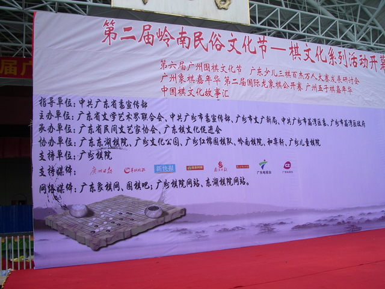
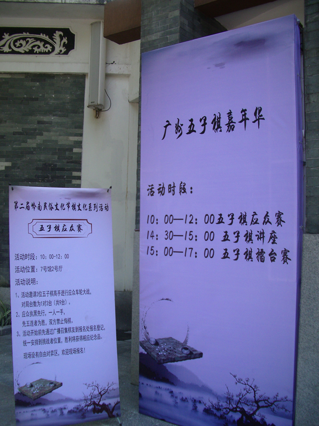
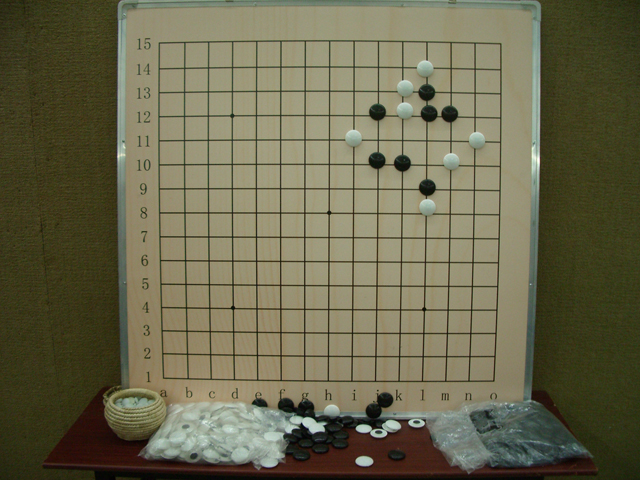
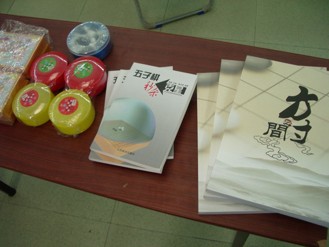
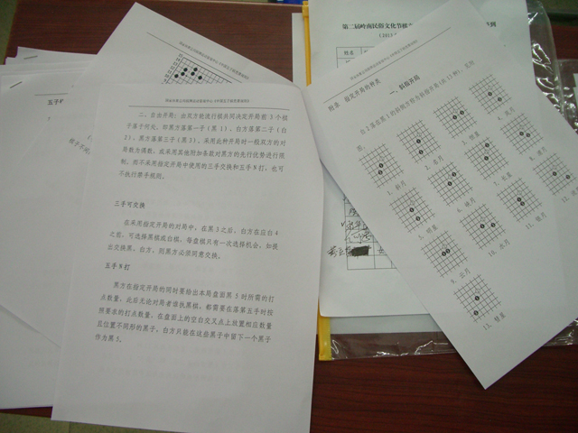
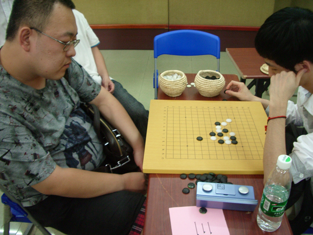
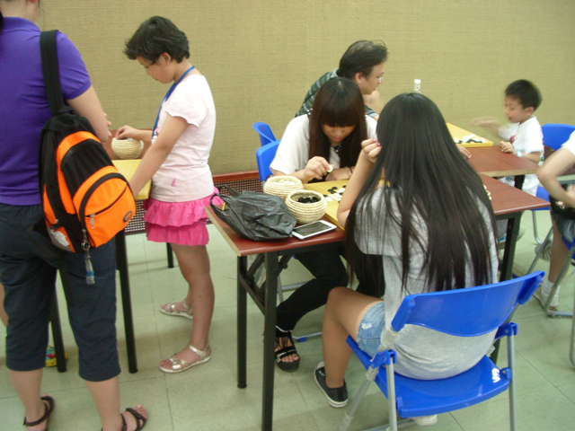
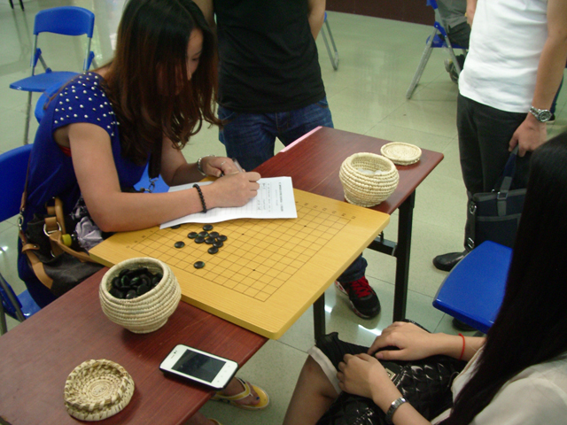
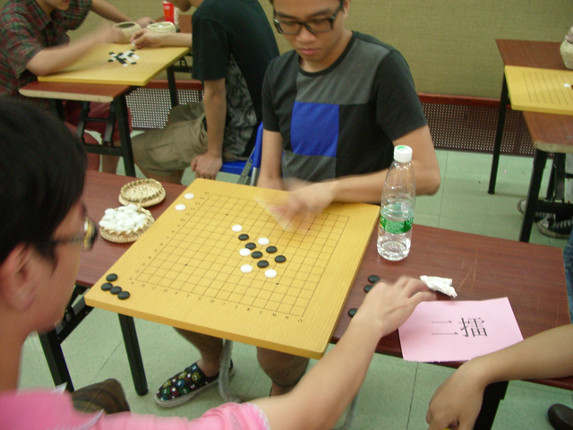

闹市中的清幽环境，适合下棋

猜猜在讲什么

擂台礼品！～

宣传资料

两个在下彩旗的银，不让我捕捉交钱的一刻。。。


MM要攻擂啦！不过我们的姨神整个下午都牢牢的守住一擂。。。 另外的一擂也很坚固，虽然也被破了

想吃鸡比？呵呵...
通过这样的活动，发现也有相当一部分男女老幼不知道五子棋诶。。。 那种觉得人人都会的观念要调整下了。。
今天活动的流行句式：你有多爱五子棋？ by 清缘
今天没甚么时间照相，补照了一些流些爪印
［此帖子已被 无尽 在 2013-6-12 22:37:39 编辑过］
［此帖子已被 无尽 在 2013-6-12 22:39:09 编辑过］
［此帖子已被 无尽 在 2013-6-12 22:40:51 编辑过］
［ 逆刃 于 2013-6-12 22:42:39 时花20金币送鲜花一朵］
［ 逆刃 于 2013-6-12 22:42:39 时花20金币送鲜花一朵］
［ 逆刃 于 2013-6-12 22:42:39 时花20金币送鲜花一朵］
［此帖子已被 无尽 在 2013-6-12 22:49:28 编辑过］
［此帖子已被 无尽 在 2013-6-12 22:55:28 编辑过］
［ 尕孩 于 2013-6-12 22:56:17 时花20金币送鲜花一朵］
［ 尕孩 于 2013-6-12 22:56:17 时花20金币送鲜花一朵］
［ 屏蔽 于 2013-6-12 23:13:58 时花20金币送鲜花一朵］
［ 屏蔽 于 2013-6-12 23:13:58 时花20金币送鲜花一朵］
［ 小红眼镜 于 2013-6-13 8:17:29 时花20金币送鲜花一朵］
［ 小红眼镜 于 2013-6-13 8:17:29 时花20金币送鲜花一朵］
［ 小红眼镜 于 2013-6-13 8:17:29 时花20金币送鲜花一朵］
［ 佐小伊 于 2013-6-13 10:30:55 时花20金币送鲜花一朵］
［ 佐小伊 于 2013-6-13 10:30:55 时花20金币送鲜花一朵］
［ 佐小伊 于 2013-6-13 10:30:55 时花20金币送鲜花一朵］
［ 佐小伊 于 2013-6-13 10:30:55 时花20金币送鲜花一朵］
［ 佐小伊 于 2013-6-13 10:30:55 时花20金币送鲜花一朵］
［ 佐小伊 于 2013-6-13 10:30:55 时花20金币送鲜花一朵］
［ 佐小伊 于 2013-6-13 10:30:55 时花20金币送鲜花一朵］
［ 佐小伊 于 2013-6-13 10:30:55 时花20金币送鲜花一朵］
［ 佐小伊 于 2013-6-13 10:30:55 时花20金币送鲜花一朵］
［ 牟林昊 于 2013-6-13 18:41:57 时花20金币送鲜花一朵］
姨神要怜香惜玉呀，MM攻擂都不让别人拿点礼品
额。。。在MM男盆友拎走她的一瞬间。。无尽跑过去送奖品了。。
 下次要更亲民
下次要更亲民


我咋不知道！没去！